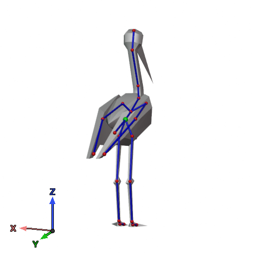

The pipeline ingests a rigged 3D model in USD format and builds two structured representations that the LLM can reason about: an Object JSON describing the skeleton at rest, and an Animation JSON capturing motion as sparse keyframes.
Method
Input & Processing
Keyframe Sampling
LLM Generation
Interpolation
Write to USD File
Click on any stage above to reveal the corresponding method details.
Stage 1: Input & Processing
Extracted Data
Skeleton Topology
Joint names and parent-child relationships forming the rig hierarchy.
Bind Transforms
The rest pose of each joint — position, rotation, and scale.
Time-Sampled Transforms
Per-frame joint transformations decomposed into translation, Euler rotation, and scale.
Axis remapping normalizes all data to a Z-up, right-handed coordinate
system. The bind pose and hierarchy are serialized into Object JSON —
keys are hierarchical joint paths (parent/child) with
p, r, s (positions, rotations, and scales) values.
JSON Representations
Object JSON bind pose
{
"root_j": {
"p": [0.0, 0.0, 0.0],
"r": [0.0, 0.0, 0.0],
"s": [1.0, 1.0, 1.0]
},
"root_j/body_main_j": {
"p": [0.25, 0.17, -2.54],
"r": [90.0, 0.0, 0.0],
"s": [1.0, 1.0, 1.0]
}
}Animation JSON keyframes
{
"root_j/body_main_j": {
"0.00": {
"p": [0.25, 0.17, -2.54],
"r": [90.0, 0.0, 0.0]
},
"1.00": {
"p": [0.35, 0.17, -2.54],
"r": [45.0, 10.0, 0.0]
}
}
}Multi-View Rig Renders
Optionally, the pipeline renders annotated views of the model showing the skeleton overlay and coordinate axes. These images give the LLM spatial context about joint placement and orientation.


Stage 2: Keyframe Sampling
Dense per-frame animation data is reduced to sparse keyframes using a greedy Bezier-based decimation algorithm. Each joint and transformation axis is processed independently.
Per-Axis Sampling
For each axis, values are normalized by $\max(|y|)$ and a Bezier curve is built from the dense samples. A min-heap greedy algorithm iteratively removes the keyframe whose removal incurs the least fitting error, until the error exceeds a threshold $\varepsilon_{\max}^2$.
Bezier Fitting Cost
When considering removing a keyframe, we fit a cubic Bezier between its two neighbors using fixed tangent directions and least-squares optimization for handle lengths.
Chord-length parameterization: $$t_i = \frac{\sum_{k=1}^{i} \| p_k - p_{k-1} \|}{\sum_{k=1}^{N} \| p_k - p_{k-1} \|}\text{,}$$ where $p_k$ is a densely sampled point of the original Bezier curve segment. $N$ is the total number of sampled points for Bezier curve segment.
Cubic Bezier with constrained tangents: $$B(t_i) = (1-t_i)^3 P_0 + 3(1-t_i)^2 t_i \, P_1 + 3(1-t_i) t_i^2 \, P_2 + t_i^3 P_3\text{,}$$ where $P_1 = P_0 + \alpha \cdot \hat{t}_L$ and $P_2 = P_3 + \beta \cdot \hat{t}_R$, with $\alpha, \beta$ solved via least-squares normal equations. $\hat{t}_L$ and $\hat{t}_R$ are the left and right normalized tangent vectors, respectively.
Removal cost: $$\text{cost} = \max_i \| B(t_i) - \text{p}_i \|^2\text{,}$$ evaluating the maximum error between the fitted Bezier curve and the densely sampled points on the whole affected Bezier curve segment.
Depth-Adaptive Error Threshold
Joints deeper in the hierarchy tolerate more error, since their world-space displacement from small local changes is reduced: $$\varepsilon_{\max}^2 = \varepsilon_{\text{base}}^2 \cdot (1 + 0.1 \cdot d)$$ where $d$ is the joint depth (number of ancestors).
Clustering & Post-Processing
After per-axis sampling, keyframes across all joints and axes are clustered within a tolerance window (default: 2 frames), using the median as the representative. A post-processing step ensures no rotation delta exceeds 180° between consecutive keyframes on any Euler axis; if it does, a midpoint keyframe is inserted recursively.
Interactive Demo
Keyframe Decimation Visualizer
Edit source points, adjust the error threshold, and scrub through each removal step.
This interactive demo requires a desktop browser.
Stage 3: LLM Generation
The core generation step uses a Large Language Model to produce Animation JSON from a structured prompt assembled from several components.
Prompt Structure
System Prompt
Task identity, Object & Animation JSON format specs, coordinate system conventions (Z-up, right-handed), keyframe authoring rules (hold keyframes, <180° rotation deltas), hierarchical transformation notes.
Object Description
Natural language description of the 3D model together with the Object JSON bind pose.
Few-Shot Examples optional
Example animations pairing short motion descriptions with Animation JSON of sampled keyframes. Their presence and quantity directly improve generation quality.
Rig Render Images optional
Multi-view renders of the model with skeleton overlay and axis gizmo, providing spatial context.
User Request
The natural language animation description to generate.
Output: Animation JSON
Keyframed joint transformations — joint paths map to timestamps with
p, r, s values.
Supporting Stages
Example Selection
An LLM selects the most relevant few-shot examples from a library based on semantic similarity of motion descriptions, transformation ratios, and rig complexity.
Joint Name Cleanup
Verbose joint names (e.g., mixamorig_LeftShoulder) are shortened
by an LLM to reduce token usage while preserving anatomical meaning.
Motion Description
User prompts are refined into clean, concise motion descriptions, stripping meta-language like “please generate” or “I want”.
Iterative Refinement
In REFINE mode the LLM receives an existing animation and a modification request, enabling progressive improvement via chat.
Stage 4: Interpolation
Generated keyframes are interpolated back into dense per-frame animation. Translations and scales use cubic Bezier FCurve interpolation; rotations use quaternion SLERP.
Bezier FCurve Interpolation (Translations & Scales)
For each keyframe at frame $f_i$ with value $v_i$, a BezierKey is created
with initial handles:
$$h_L = [f_i - \tfrac{1}{3},\; \tfrac{2v_i + v_{i-1}}{3}], \quad h_R = [f_i + \tfrac{1}{3},\; \tfrac{2v_i + v_{i+1}}{3}]$$
Auto Handle Computation
Given three consecutive keyframes $p_{i-1}, p_{i}, p_{i+1}$, the tangent vector at $p_i$ is:
$$\vec{t} = \frac{p_{i+1} - p_i}{\Delta x_{b}} + \frac{p_i - p_{i-1}}{\Delta x_{a}}\text{,}$$ where $\Delta x_{b} = f_{i+1} - f_i$ and $\Delta x_{a} = f_i - f_{i-1}$ of the respective keyframes.
With auto-smoothing, the length factor is $\lambda = 6.0$. Handles are placed at:
$$h_L = p_i - \vec{t} \cdot \frac{\Delta x_a}{\lambda}, \quad h_R = p_i + \vec{t} \cdot \frac{\Delta x_b}{\lambda}$$
Tangent Clamping
To prevent overshooting, handles are clamped in two cases:
- Local extremum: If both neighbors are on the same side (both above or both below the key), handles' $y$ coordinates are locked to the key's $y$ value.
- Overshoot: If a handle's $y$ denoted $h_{S_y}$ exceeds the respective neighboring key's $y$ value, it is clamped to that value, and the opposite handle is adjusted to maintain C1 continuity: $$ h_{R_y} = p_{i_y} + \frac{(p_{i_y} - h_{L_y})}{\Delta x_a} \cdot \Delta x_b\text{, if left handle overshoots,} \\ h_{L_y} = p_{i_y} + \frac{(p_{i_y} - h_{R_y})}{\Delta x_b} \cdot \Delta x_a\text{, if right handle overshoots} $$ Here $p_{i_y}$ is the key's $y$ value.
Endpoint handles use constant extrapolation (locked to the key value).
Quaternion SLERP (Rotations)
Rotations are interpolated using Spherical Linear Interpolation:
$$\text{slerp}(q_1, q_2, t) = \frac{\sin((1-t)\theta)}{\sin\theta}\, q_1 + \frac{\sin(t\,\theta)}{\sin\theta}\, q_2$$
where $\theta = \arccos(q_1 \cdot q_2)$. If $q_1 \cdot q_2 < 0$, $q_2$ is negated to take the shortest path. For nearly parallel quaternions ($\text{dot} > 0.9995$), a linear blend is used instead. Optional smoothstep easing applies $t' = 3t^2 - 2t^3$.
Interactive Demo
Bézier Interpolation Visualizer
Drag keys to edit, toggle handle visibility, and experiment with clamping modes.
This interactive demo requires a desktop browser.
Stage 5: Writing Back to USD
The final stage writes the generated animation back to a USD file in a non-destructive manner. The original scene data is fully preserved through a four-step process.
Write Process
1
Scene Transfer
The entire source file content is transferred to a new output file, preserving meshes, materials, textures, skeleton bindings, and all other scene data.
2
Animation Creation
A new animation primitive is created under the skeleton, and the skeleton’s animation source is updated to reference it.
3
Time-Sampled Transforms
For each frame, per-joint translations, rotations (as quaternions), and scales are written as time-sampled attributes on the animation primitive.
4
Metadata Embedding
Animation JSON, motion description, model description, generation timestamp, and library version are stored as custom data for reproducibility.
File Composition
Source USD
- Meshes
- Materials
- Textures
- Skeleton
- Bindings
Generated
- Keyframed transforms
- Metadata
Output USD
- All original data
- New animation
- Provenance info